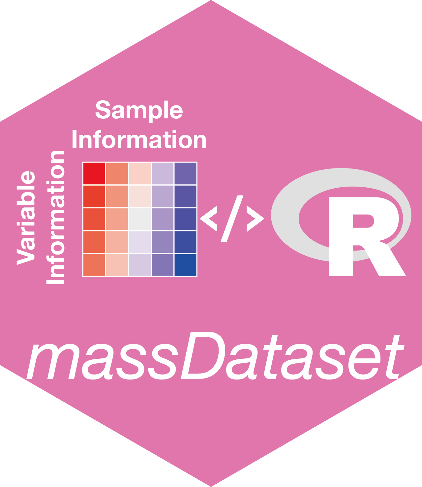

tidymass_parameters.template.Rmd
Processing information
2022-02-20
More information about this can be found here
| pacakge_name | function_name | parameter | time |
|---|---|---|---|
| massprocesser | process_data | path:mzxml_ms1_data/POS | 2022-02-19 01:10:28 |
| massprocesser | process_data | polarity:positive | 2022-02-19 01:10:28 |
| massprocesser | process_data | ppm:10 | 2022-02-19 01:10:28 |
| massprocesser | process_data | peakwidth:10,60 | 2022-02-19 01:10:28 |
| massprocesser | process_data | snthresh:10 | 2022-02-19 01:10:28 |
| massprocesser | process_data | prefilter:3,500 | 2022-02-19 01:10:28 |
| massprocesser | process_data | fitgauss:FALSE | 2022-02-19 01:10:28 |
| massprocesser | process_data | integrate:2 | 2022-02-19 01:10:28 |
| massprocesser | process_data | mzdiff:0.01 | 2022-02-19 01:10:28 |
| massprocesser | process_data | noise:500 | 2022-02-19 01:10:28 |
| massprocesser | process_data | threads:4 | 2022-02-19 01:10:28 |
| massprocesser | process_data | binSize:0.025 | 2022-02-19 01:10:28 |
| massprocesser | process_data | bw:5 | 2022-02-19 01:10:28 |
| massprocesser | process_data | output_tic:FALSE | 2022-02-19 01:10:28 |
| massprocesser | process_data | output_bpc:FALSE | 2022-02-19 01:10:28 |
| massprocesser | process_data | output_rt_correction_plot:FALSE | 2022-02-19 01:10:28 |
| massprocesser | process_data | min_fraction:0.5 | 2022-02-19 01:10:28 |
| massprocesser | process_data | fill_peaks:FALSE | 2022-02-19 01:10:28 |
| massdataset | create_mass_dataset() | no:no | 2022-02-19 01:10:49 |
| massprocesser | process_data | path:mzxml_ms1_data/NEG | 2022-02-19 01:11:33 |
| massprocesser | process_data | polarity:negative | 2022-02-19 01:11:33 |
| massprocesser | process_data | ppm:10 | 2022-02-19 01:11:33 |
| massprocesser | process_data | peakwidth:10,60 | 2022-02-19 01:11:33 |
| massprocesser | process_data | snthresh:10 | 2022-02-19 01:11:33 |
| massprocesser | process_data | prefilter:3,500 | 2022-02-19 01:11:33 |
| massprocesser | process_data | fitgauss:FALSE | 2022-02-19 01:11:33 |
| massprocesser | process_data | integrate:2 | 2022-02-19 01:11:33 |
| massprocesser | process_data | mzdiff:0.01 | 2022-02-19 01:11:33 |
| massprocesser | process_data | noise:500 | 2022-02-19 01:11:33 |
| massprocesser | process_data | threads:4 | 2022-02-19 01:11:33 |
| massprocesser | process_data | binSize:0.025 | 2022-02-19 01:11:33 |
| massprocesser | process_data | bw:5 | 2022-02-19 01:11:33 |
| massprocesser | process_data | output_tic:FALSE | 2022-02-19 01:11:33 |
| massprocesser | process_data | output_bpc:FALSE | 2022-02-19 01:11:33 |
| massprocesser | process_data | output_rt_correction_plot:FALSE | 2022-02-19 01:11:33 |
| massprocesser | process_data | min_fraction:0.5 | 2022-02-19 01:11:33 |
| massprocesser | process_data | fill_peaks:FALSE | 2022-02-19 01:11:33 |
| massdataset | create_mass_dataset() | no:no | 2022-02-19 01:11:47 |
| massdataset | mutate() | parameter_1:batch=as.character(batch) | 2022-02-19 01:12:19 |
| massdataset | mutate() | parameter_1:batch=as.character(batch) | 2022-02-19 01:12:19 |
| massdataset | mutate_variable_na_freq() | according_to_samples:sample_QC_01,sample_QC_02,sample_QC_03,sample_QC_04,sample_QC_05,… | 2022-02-19 01:12:46 |
| massdataset | mutate_variable_na_freq() | according_to_samples:sample_01,sample_02,sample_07,sample_100,sample_101,… | 2022-02-19 01:12:46 |
| massdataset | mutate_variable_na_freq() | according_to_samples:sample_06,sample_103,sample_11,sample_112,sample_117,… | 2022-02-19 01:12:46 |
| massdataset | filter() | parameter:~na_freq < 0.2 & (na_freq.1 < 0.5 | na_freq.2 < 0.5)
|
2022-02-19 01:12:47 |
| massdataset | mutate_variable_na_freq() | according_to_samples:sample_QC_01,sample_QC_02,sample_QC_03,sample_QC_04,sample_QC_05,… | 2022-02-19 01:12:48 |
| massdataset | mutate_variable_na_freq() | according_to_samples:sample_01,sample_02,sample_07,sample_100,sample_101,… | 2022-02-19 01:12:48 |
| massdataset | mutate_variable_na_freq() | according_to_samples:sample_06,sample_103,sample_11,sample_112,sample_117,… | 2022-02-19 01:12:48 |
| massdataset | filter() | parameter:~na_freq < 0.2 & (na_freq.1 < 0.5 | na_freq.2 < 0.5)
|
2022-02-19 01:12:49 |
| masscleaner | impute_mv() | method:knn | 2022-02-19 01:12:57 |
| masscleaner | impute_mv() | rowmax:0.5 | 2022-02-19 01:12:57 |
| masscleaner | impute_mv() | colmax:0.8 | 2022-02-19 01:12:57 |
| masscleaner | impute_mv() | maxp:1500 | 2022-02-19 01:12:57 |
| masscleaner | impute_mv() | rng.seed:362436069 | 2022-02-19 01:12:57 |
| masscleaner | impute_mv() | sample_id:sample_06,sample_103,sample_11,sample_112,sample_117,… | 2022-02-19 01:12:57 |
| masscleaner | impute_mv() | method:knn | 2022-02-19 01:13:02 |
| masscleaner | impute_mv() | rowmax:0.5 | 2022-02-19 01:13:02 |
| masscleaner | impute_mv() | colmax:0.8 | 2022-02-19 01:13:02 |
| masscleaner | impute_mv() | maxp:1500 | 2022-02-19 01:13:02 |
| masscleaner | impute_mv() | rng.seed:362436069 | 2022-02-19 01:13:02 |
| masscleaner | impute_mv() | sample_id:sample_06,sample_103,sample_11,sample_112,sample_117,… | 2022-02-19 01:13:02 |
| masscleaner | normalize_data() | method:median | 2022-02-19 01:13:02 |
| masscleaner | normalize_data() | keep_scale:TRUE | 2022-02-19 01:13:02 |
| masscleaner | integrate_data() | method:subject_median | 2022-02-19 01:13:03 |
| masscleaner | normalize_data() | method:median | 2022-02-19 01:13:06 |
| masscleaner | normalize_data() | keep_scale:TRUE | 2022-02-19 01:13:06 |
| masscleaner | integrate_data() | method:subject_median | 2022-02-19 01:13:07 |
| massdataset | update_mass_dataset() | no:no | 2022-02-19 01:13:09 |
| massdataset | mutate_ms2() | column:rp | 2022-02-19 01:13:37 |
| massdataset | mutate_ms2() | polarity:positive | 2022-02-19 01:13:37 |
| massdataset | mutate_ms2() | ms1.ms2.match.mz.tol:15 | 2022-02-19 01:13:37 |
| massdataset | mutate_ms2() | ms1.ms2.match.rt.tol:30 | 2022-02-19 01:13:37 |
| massdataset | mutate_ms2() | path:mgf_ms2_data/POS | 2022-02-19 01:13:37 |
| massdataset | update_mass_dataset() | no:no | 2022-02-19 01:13:38 |
| massdataset | mutate_ms2() | column:rp | 2022-02-19 01:14:06 |
| massdataset | mutate_ms2() | polarity:negative | 2022-02-19 01:14:06 |
| massdataset | mutate_ms2() | ms1.ms2.match.mz.tol:15 | 2022-02-19 01:14:06 |
| massdataset | mutate_ms2() | ms1.ms2.match.rt.tol:30 | 2022-02-19 01:14:06 |
| massdataset | mutate_ms2() | path:mgf_ms2_data/NEG | 2022-02-19 01:14:06 |
| metid | annotate_metabolites_mass_dataset() | ms1.match.ppm:15 | 2022-02-19 01:38:29 |
| metid | annotate_metabolites_mass_dataset() | ms2.match.ppm:30 | 2022-02-19 01:38:29 |
| metid | annotate_metabolites_mass_dataset() | mz.ppm.thr:400 | 2022-02-19 01:38:29 |
| metid | annotate_metabolites_mass_dataset() | ms2.match.tol:0.5 | 2022-02-19 01:38:29 |
| metid | annotate_metabolites_mass_dataset() | fraction.weight:0.3 | 2022-02-19 01:38:29 |
| metid | annotate_metabolites_mass_dataset() | dp.forward.weight:0.6 | 2022-02-19 01:38:29 |
| metid | annotate_metabolites_mass_dataset() | dp.reverse.weight:0.1 | 2022-02-19 01:38:29 |
| metid | annotate_metabolites_mass_dataset() | rt.match.tol:30 | 2022-02-19 01:38:29 |
| metid | annotate_metabolites_mass_dataset() | polarity:positive | 2022-02-19 01:38:29 |
| metid | annotate_metabolites_mass_dataset() | ce:all | 2022-02-19 01:38:29 |
| metid | annotate_metabolites_mass_dataset() | column:rp | 2022-02-19 01:38:29 |
| metid | annotate_metabolites_mass_dataset() | ms1.match.weight:0.25 | 2022-02-19 01:38:29 |
| metid | annotate_metabolites_mass_dataset() | rt.match.weight:0.25 | 2022-02-19 01:38:29 |
| metid | annotate_metabolites_mass_dataset() | ms2.match.weight:0.5 | 2022-02-19 01:38:29 |
| metid | annotate_metabolites_mass_dataset() | total.score.tol:0.5 | 2022-02-19 01:38:29 |
| metid | annotate_metabolites_mass_dataset() | candidate.num:3 | 2022-02-19 01:38:29 |
| metid | annotate_metabolites_mass_dataset() | database:MS_0.0.2 | 2022-02-19 01:38:29 |
| metid | annotate_metabolites_mass_dataset() | threads:3 | 2022-02-19 01:38:29 |
| metid | annotate_metabolites_mass_dataset() | ms1.match.ppm:15 | 2022-02-19 07:38:50 |
| metid | annotate_metabolites_mass_dataset() | ms2.match.ppm:30 | 2022-02-19 07:38:50 |
| metid | annotate_metabolites_mass_dataset() | mz.ppm.thr:400 | 2022-02-19 07:38:50 |
| metid | annotate_metabolites_mass_dataset() | ms2.match.tol:0.5 | 2022-02-19 07:38:50 |
| metid | annotate_metabolites_mass_dataset() | fraction.weight:0.3 | 2022-02-19 07:38:50 |
| metid | annotate_metabolites_mass_dataset() | dp.forward.weight:0.6 | 2022-02-19 07:38:50 |
| metid | annotate_metabolites_mass_dataset() | dp.reverse.weight:0.1 | 2022-02-19 07:38:50 |
| metid | annotate_metabolites_mass_dataset() | rt.match.tol:30 | 2022-02-19 07:38:50 |
| metid | annotate_metabolites_mass_dataset() | polarity:positive | 2022-02-19 07:38:50 |
| metid | annotate_metabolites_mass_dataset() | ce:all | 2022-02-19 07:38:50 |
| metid | annotate_metabolites_mass_dataset() | column:rp | 2022-02-19 07:38:50 |
| metid | annotate_metabolites_mass_dataset() | ms1.match.weight:0.25 | 2022-02-19 07:38:50 |
| metid | annotate_metabolites_mass_dataset() | rt.match.weight:0.25 | 2022-02-19 07:38:50 |
| metid | annotate_metabolites_mass_dataset() | ms2.match.weight:0.5 | 2022-02-19 07:38:50 |
| metid | annotate_metabolites_mass_dataset() | total.score.tol:0.5 | 2022-02-19 07:38:50 |
| metid | annotate_metabolites_mass_dataset() | candidate.num:3 | 2022-02-19 07:38:50 |
| metid | annotate_metabolites_mass_dataset() | database:NIST_0.0.1 | 2022-02-19 07:38:50 |
| metid | annotate_metabolites_mass_dataset() | threads:3 | 2022-02-19 07:38:50 |
| metid | annotate_metabolites_mass_dataset() | ms1.match.ppm:15 | 2022-02-19 09:34:18 |
| metid | annotate_metabolites_mass_dataset() | ms2.match.ppm:30 | 2022-02-19 09:34:18 |
| metid | annotate_metabolites_mass_dataset() | mz.ppm.thr:400 | 2022-02-19 09:34:18 |
| metid | annotate_metabolites_mass_dataset() | ms2.match.tol:0.5 | 2022-02-19 09:34:18 |
| metid | annotate_metabolites_mass_dataset() | fraction.weight:0.3 | 2022-02-19 09:34:18 |
| metid | annotate_metabolites_mass_dataset() | dp.forward.weight:0.6 | 2022-02-19 09:34:18 |
| metid | annotate_metabolites_mass_dataset() | dp.reverse.weight:0.1 | 2022-02-19 09:34:18 |
| metid | annotate_metabolites_mass_dataset() | rt.match.tol:30 | 2022-02-19 09:34:18 |
| metid | annotate_metabolites_mass_dataset() | polarity:positive | 2022-02-19 09:34:18 |
| metid | annotate_metabolites_mass_dataset() | ce:all | 2022-02-19 09:34:18 |
| metid | annotate_metabolites_mass_dataset() | column:rp | 2022-02-19 09:34:18 |
| metid | annotate_metabolites_mass_dataset() | ms1.match.weight:0.25 | 2022-02-19 09:34:18 |
| metid | annotate_metabolites_mass_dataset() | rt.match.weight:0.25 | 2022-02-19 09:34:18 |
| metid | annotate_metabolites_mass_dataset() | ms2.match.weight:0.5 | 2022-02-19 09:34:18 |
| metid | annotate_metabolites_mass_dataset() | total.score.tol:0.5 | 2022-02-19 09:34:18 |
| metid | annotate_metabolites_mass_dataset() | candidate.num:3 | 2022-02-19 09:34:18 |
| metid | annotate_metabolites_mass_dataset() | database:MoNA_0.0.1 | 2022-02-19 09:34:18 |
| metid | annotate_metabolites_mass_dataset() | threads:3 | 2022-02-19 09:34:18 |
| metid | annotate_metabolites_mass_dataset() | ms1.match.ppm:15 | 2022-02-19 09:39:19 |
| metid | annotate_metabolites_mass_dataset() | ms2.match.ppm:30 | 2022-02-19 09:39:19 |
| metid | annotate_metabolites_mass_dataset() | mz.ppm.thr:400 | 2022-02-19 09:39:19 |
| metid | annotate_metabolites_mass_dataset() | ms2.match.tol:0.5 | 2022-02-19 09:39:19 |
| metid | annotate_metabolites_mass_dataset() | fraction.weight:0.3 | 2022-02-19 09:39:19 |
| metid | annotate_metabolites_mass_dataset() | dp.forward.weight:0.6 | 2022-02-19 09:39:19 |
| metid | annotate_metabolites_mass_dataset() | dp.reverse.weight:0.1 | 2022-02-19 09:39:19 |
| metid | annotate_metabolites_mass_dataset() | rt.match.tol:30 | 2022-02-19 09:39:19 |
| metid | annotate_metabolites_mass_dataset() | polarity:negative | 2022-02-19 09:39:19 |
| metid | annotate_metabolites_mass_dataset() | ce:all | 2022-02-19 09:39:19 |
| metid | annotate_metabolites_mass_dataset() | column:rp | 2022-02-19 09:39:19 |
| metid | annotate_metabolites_mass_dataset() | ms1.match.weight:0.25 | 2022-02-19 09:39:19 |
| metid | annotate_metabolites_mass_dataset() | rt.match.weight:0.25 | 2022-02-19 09:39:19 |
| metid | annotate_metabolites_mass_dataset() | ms2.match.weight:0.5 | 2022-02-19 09:39:19 |
| metid | annotate_metabolites_mass_dataset() | total.score.tol:0.5 | 2022-02-19 09:39:19 |
| metid | annotate_metabolites_mass_dataset() | candidate.num:3 | 2022-02-19 09:39:19 |
| metid | annotate_metabolites_mass_dataset() | database:MS_0.0.2 | 2022-02-19 09:39:19 |
| metid | annotate_metabolites_mass_dataset() | threads:3 | 2022-02-19 09:39:19 |
| metid | annotate_metabolites_mass_dataset() | ms1.match.ppm:15 | 2022-02-19 09:54:34 |
| metid | annotate_metabolites_mass_dataset() | ms2.match.ppm:30 | 2022-02-19 09:54:34 |
| metid | annotate_metabolites_mass_dataset() | mz.ppm.thr:400 | 2022-02-19 09:54:34 |
| metid | annotate_metabolites_mass_dataset() | ms2.match.tol:0.5 | 2022-02-19 09:54:34 |
| metid | annotate_metabolites_mass_dataset() | fraction.weight:0.3 | 2022-02-19 09:54:34 |
| metid | annotate_metabolites_mass_dataset() | dp.forward.weight:0.6 | 2022-02-19 09:54:34 |
| metid | annotate_metabolites_mass_dataset() | dp.reverse.weight:0.1 | 2022-02-19 09:54:34 |
| metid | annotate_metabolites_mass_dataset() | rt.match.tol:30 | 2022-02-19 09:54:34 |
| metid | annotate_metabolites_mass_dataset() | polarity:negative | 2022-02-19 09:54:34 |
| metid | annotate_metabolites_mass_dataset() | ce:all | 2022-02-19 09:54:34 |
| metid | annotate_metabolites_mass_dataset() | column:rp | 2022-02-19 09:54:34 |
| metid | annotate_metabolites_mass_dataset() | ms1.match.weight:0.25 | 2022-02-19 09:54:34 |
| metid | annotate_metabolites_mass_dataset() | rt.match.weight:0.25 | 2022-02-19 09:54:34 |
| metid | annotate_metabolites_mass_dataset() | ms2.match.weight:0.5 | 2022-02-19 09:54:34 |
| metid | annotate_metabolites_mass_dataset() | total.score.tol:0.5 | 2022-02-19 09:54:34 |
| metid | annotate_metabolites_mass_dataset() | candidate.num:3 | 2022-02-19 09:54:34 |
| metid | annotate_metabolites_mass_dataset() | database:NIST_0.0.1 | 2022-02-19 09:54:34 |
| metid | annotate_metabolites_mass_dataset() | threads:3 | 2022-02-19 09:54:34 |
| metid | annotate_metabolites_mass_dataset() | ms1.match.ppm:15 | 2022-02-19 10:24:15 |
| metid | annotate_metabolites_mass_dataset() | ms2.match.ppm:30 | 2022-02-19 10:24:15 |
| metid | annotate_metabolites_mass_dataset() | mz.ppm.thr:400 | 2022-02-19 10:24:15 |
| metid | annotate_metabolites_mass_dataset() | ms2.match.tol:0.5 | 2022-02-19 10:24:15 |
| metid | annotate_metabolites_mass_dataset() | fraction.weight:0.3 | 2022-02-19 10:24:15 |
| metid | annotate_metabolites_mass_dataset() | dp.forward.weight:0.6 | 2022-02-19 10:24:15 |
| metid | annotate_metabolites_mass_dataset() | dp.reverse.weight:0.1 | 2022-02-19 10:24:15 |
| metid | annotate_metabolites_mass_dataset() | rt.match.tol:30 | 2022-02-19 10:24:15 |
| metid | annotate_metabolites_mass_dataset() | polarity:negative | 2022-02-19 10:24:15 |
| metid | annotate_metabolites_mass_dataset() | ce:all | 2022-02-19 10:24:15 |
| metid | annotate_metabolites_mass_dataset() | column:rp | 2022-02-19 10:24:15 |
| metid | annotate_metabolites_mass_dataset() | ms1.match.weight:0.25 | 2022-02-19 10:24:15 |
| metid | annotate_metabolites_mass_dataset() | rt.match.weight:0.25 | 2022-02-19 10:24:15 |
| metid | annotate_metabolites_mass_dataset() | ms2.match.weight:0.5 | 2022-02-19 10:24:15 |
| metid | annotate_metabolites_mass_dataset() | total.score.tol:0.5 | 2022-02-19 10:24:15 |
| metid | annotate_metabolites_mass_dataset() | candidate.num:3 | 2022-02-19 10:24:15 |
| metid | annotate_metabolites_mass_dataset() | database:MoNA_0.0.1 | 2022-02-19 10:24:15 |
| metid | annotate_metabolites_mass_dataset() | threads:3 | 2022-02-19 10:24:15 |
| massdataset | filter() | parameter:~!is.na(Level)
|
2022-02-19 10:24:20 |
| massdataset | filter() | parameter:~Level == 1 | Level == 2
|
2022-02-19 10:24:20 |
| massdataset | filter() | parameter:~!is.na(Level)
|
2022-02-19 10:24:21 |
| massdataset | filter() | parameter:~Level == 1 | Level == 2
|
2022-02-19 10:24:21 |
| massdataset | merge_mass_dataset | sample_direction:inner | 2022-02-19 10:24:22 |
| massdataset | merge_mass_dataset | variable_direction:full | 2022-02-19 10:24:22 |
| massdataset | merge_mass_dataset | sample_by:sample_id | 2022-02-19 10:24:22 |
| massdataset | merge_mass_dataset | variable_by:variable_id,mz,rt | 2022-02-19 10:24:22 |